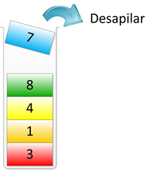
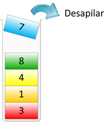

Estructuras de Datos I
Una Estructura de Datos es un medio para almacenar y organizar datos. Una estructura de datos NO resuelve un problema por sí sola, pero si puede ser la diferencia entre recibir un Accepted o un Time Limit Exceeded :c
- Arreglos
- ArrayList
- Queue
- Priority Queue
- Deque
- Stack
Arreglos
Colecciones de datos secuenciales para ser almacenadas y accedidas luego a traves de sus indices.
La cantidad de elementos a almacenar es fija.

/*
Declaración de un arreglo
tipo_dato nombre [];
Asignación
nombre[]=new tipo_dato [tamaño];
*/
int datos[]=new int[10];
double numeros[]=new double[12];
char caracteres[]=new char[26];
int datos[][]=new int [5] [3];
ArrayList
Colecciones de datos secuenciales para ser almacenadas y accedidas luego a traves de sus indices.
La cantidad de elementos a almacenar es variable.
import java.util.ArrayList;
//Declaración de un ArrayList
ArrayList<Integer> datos=new ArrayList<Integer>();
ArrayList<Double> numeros=new ArrayList<Double>();
ArrayList<Character> caracteres=new ArrayList<Character>();
ArrayList: Métodos
- add(data): Añade el valor data al final del ArrayList.
- clear( ): Elimina todos los elementos del ArrayList.
- get(index): Retorna el elemento que se encuentra en la posición index del ArrayList.
- indexOf(data): Retorna el indice en el que se encuentra data dentro del ArrayList.
- isEmpty( ): Retorna un boolean que indica si el ArrayList tiene elementos o no.
Queue (Colas)
Son contenedores dinámicos que poseen un comportamiento FIFO (First In First Out), y por lo tanto solo se pueden insertar elementos al final y eliminar elementos del principio de la estructura.

import java.util.LinkedList;
import java.util.Queue;
//Declaración de una Cola
Queue<Integer> cola=new LinkedList<Integer>();
Queue<String> nombres=new LinkedList<String>();
Queue<Float> numeros=new LinkedList<Float>();
Queue: Métodos
- add(data): Añade el valor data al final de la Cola.
- peek( ): Retorna el elemento del inicio de la Cola.
- poll( ): Retorna y elimina el elemento del inicio de la Cola.
- size( ): Retorna la cantidad de elementos que se encuentran en la Cola.
- isEmpty( ): Retorna un boolean que indica si la Cola se encuentra vacia.
Priority Queue (Cola de Prioridad)
Una cola de prioridad al igual que una cola solo permite acceder al elemento que se encuentra al inicio de la estructura, pero al momento de realizar la inserción la cola toma en cuenta la prioridad asociada al elemento para ordenar todos los datos existentes en la cola.
import java.util.PriorityQueue;
//Declaración de una Cola
PriorityQueue<Integer> pq=new PriorityQueue<Integer>();
PriorityQueue<String> nombres=new PriorityQueue<String>();
PriorityQueue<Float> numeros=new PriorityQueue<Float>();
Deque (Bicola)
Una Deque o bicola es un contenedor dinámico que permite una inserción y eliminación rápida desde sus dos extremos (inicio - fin)

import java.util.ArrayDeque;
import java.util.Deque;
//Declaración de una Deque
Deque<Integer> deque=new ArrayDeque<Integer>();
Deque<String> nombres=new ArrayDeque<String>();
Deque<Float> numeros=new ArrayDeque<Float>();
Deque: Métodos
- add(data): Añade el valor data al final de la Deque.
- addFirst(data): Añade el valor data al inicio de la Deque.
- pollFirst( ): Retorna y elimina el elemento del inicio de la Deque.
- pollLast( ): Retorna y elimina el elemento del final de la Deque.
- peekFirst( ): Retorna el elemento del inicio de la Deque.
- peekLast( ): Retorna el elemento del final de la Deque.
Pilas (Stack)
Son contenedores dinámicos que poseen un comportamiento LIFO (Last In First Out), y por lo tanto solo se pueden insertar y eliminar elementos del final de la estructura.
 

import java.util.Stack;
//Declaración de una Pila
Stack<Integer> pila=new Stack<Integer>();
Stack<String> nombres=new Stack<String>();
Stack<Float> numeros=new Stack<Float>();
Stack: Métodos
- push(data): Inserta el valor data en el tope de la Pila.
- peek( ): Retorna el elemento del tope de la Pila.
- pop( ): Retorna y elimina el elemento del tope de la Pila.
- empty( ): Retorna un boolean que indica si la Pila se encuentra vacia.